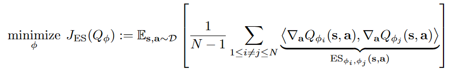
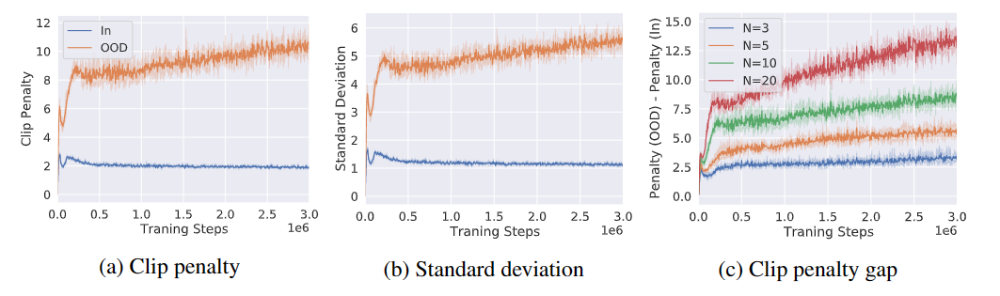
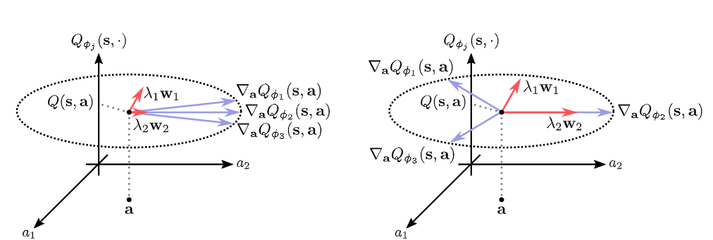
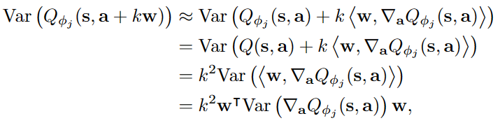
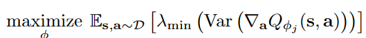
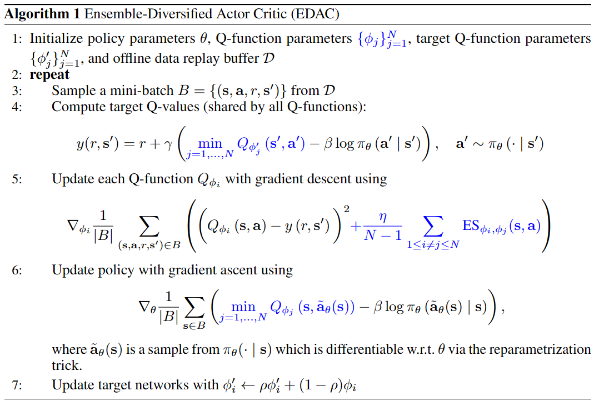
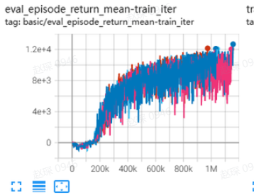
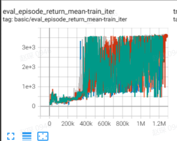
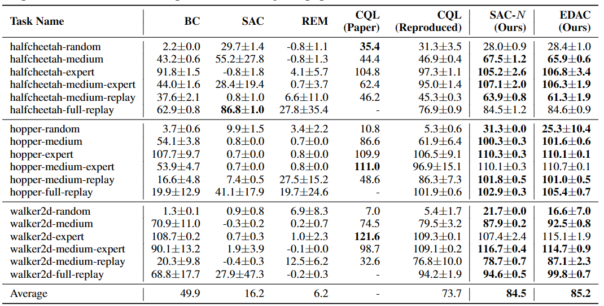

EDAC¶
Overview¶
Offline reinforcement learning (RL) is a re-emerging area of study that aims to learn behaviors using large, previously collected datasets, without further environment interaction. It has the potential to make tremendous progress in a number of real-world decision-making problems where active data collection is expensive (e.g., in robotics, drug discovery, dialogue generation, recommendation systems) or unsafe/dangerous (e.g., healthcare, autonomous driving, or education). Besides, the quantities of data that can be gathered online are substantially lower than the offline datasets. Such a paradigm promises to resolve a key challenge to bringing reinforcement learning algorithms out of constrained lab settings to the real world.
However, directly utilizing existing value-based off-policy RL algorithms in an offline setting generally results in poor performance, due to issues with bootstrapping from out-of-distribution actions and overfitting. Thus, many constrain techniques (e.g. policy constraint; conservative estimation; uncertainty estimation) are added to basic online RL algorithms. Uncertainty-Based Offline Reinforcement Learning with Diversified Q-Ensemble (EDAC), first proposed in Uncertainty-Based Offline Reinforcement Learning with Diversified Q-Ensemble, is one of them which penalty out-of-distribution(OOD) action by adding more critic networks.
Quick Facts¶
EDAC is an offline uncertainty estimation RL algorithm.
EDAC can be implemented with less than 20 lines of code on top of a number of SAC RL algorithms
EDAC supports continuous action spaces.
Key Equations or Key Graphs¶
EDAC show that clipped Q-learning \(min_{j=1,2}Q(s,a)\) can penalty OOD action by add the number of critic. Therefore EDAC can be implemented by ensembleing Q-network on standard SAC RL algorithm and add a penalty term to penalty OOD action.
In general, for the EDAC, the penalty term is following:
{kind=link}
By adding above penalty term, the algorithm can minimize the number of necessary critics to achieve higher computational efficiency while maintaining good performance. This term compute the inner-product of gradients of Q-values of in-dataset state-actions.
EDAC show the importance of clipped Q-learning by increasing the number of Q-networks in SAC algorithm. By computing the clipe penalty and standard deviation of OOD action adn in-dataset action, paper show why algorithm will perform better by increasing the number of Q-network. The figure of these results is as following:
{kind=link}
In the figure below, paper shows the gradients of Q-value of OOD action, where the red vector indicates the direction under OOD actions. We find that if the variance of Q-value of OOD actions is small, then it will receive a smaller penalty during gradient descent. This further explains why increasing the number of critics can penalize OOD actions, and also indicates the direction for later improvement in the paper.
{kind=link}
Althought increasing the number of Q-networks can improve performance, too many Q networks will become a burden. Therefore, EDAC add a penalty term to reduce the number of critics. Using first-order Taylor approximate, he sample variance of the Q-values at an OOD action along wcan be represented as following:
{kind=link}
To increasing the variance of Q-values effectively for near-distribution OOD actions, EDAC maximize the following equation:
{kind=link}
There are several methods to compute the smallest eigenvalue, such as the power method or the QR algorithm. However, these iterative methods require constructing huge computation graphs, which makes optimizing the eigenvalue using back-propagation inefficient. Instead, we aim to maximize the sum of all eigenvalues, which is equal to the total variance. Above equation is equivalent to minimizing the equation of first figure.
Pseudo-code¶
The pseudo-code is shown in Algorithm 1, with differences from conventional actor critic algorithms (e.g., SAC) in blue
{kind=link}
Implementations¶
The default config of EDACPolicy is defined as follows:
Benchmark¶
environment |
best mean reward |
evaluation results |
config link |
comparison |
|---|---|---|---|---|
HalfCheetah (Medium Expert) |
92.5 \(\pm\) 9.9 |
 | EDAC Repo (106.3 \(\pm\) 1.9) |
|
Hopper (Medium Expert) |
110.8 \(\pm\) 1.3 |
 | EDAC Repo (110.7 \(\pm\) 0.1) |
Specifically for each dataset, our implementation results are as follows:
environment |
medium expert |
medium |
|---|---|---|
HalfCheetah |
92.5 \(\pm\) 2.8 |
59.9 \(\pm\) 2.8 |
Hopper |
110.8 \(\pm\) 1.3 |
100.5 \(\pm\) 1.6 |
P.S.：
The above results are obtained by running the same configuration on four different random seeds (0, 42, 88, 123, 16)
The above benchmark is for HalfCheetah-v2, Hopper-v2.
The comparison results above is obtained via the paper Uncertainty-Based Offline Reinforcement Learning with Diversified Q-Ensemble. The complete table is depicted below
The above Tensorboard results illustrate the unnormalized results
{kind=link}
Reference¶
Kumar, Aviral, et al. “Conservative q-learning for offline reinforcement learning.” arXiv preprint arXiv:2006.04779 (2020).
Chenjia Bai, et al. “Pessimistic Bootstrapping for Uncertainty-Driven Offline Reinforcement Learning.”